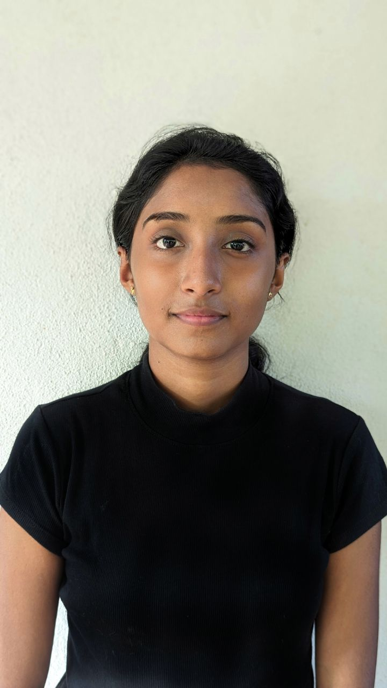

- Higher Education: Bachelor of Science in Biotechnology, SLIIT
- Secondary Education: [Add your secondary education here]
Hi,A dedicated first-year biotechnology student at SLIIT, with a keen interest in exploring the intersections of biology and technology. Passionate about scientific experimentation, there is hands-on experience in various laboratory settings. Outside of academia, there is an enthusiasm for the night sky, often finding inspiration in its beauty. With a love for aesthetics, creativity is aimed to be integrated into scientific pursuits.
[If you have any work experience, list it here. If not, you can mention internships or volunteer work related to biotechnology.]
[Add any projects related to biotechnology, research, or other academic endeavors you've worked on here.]
[If you have technical skills, lab techniques, or software knowledge, mention them here. For example, PCR, gel electrophoresis, etc.]
In my free time, I enjoy stargazing, photography, and exploring nature. I'm also passionate about learning new things and keeping up with the latest trends in biotechnology.